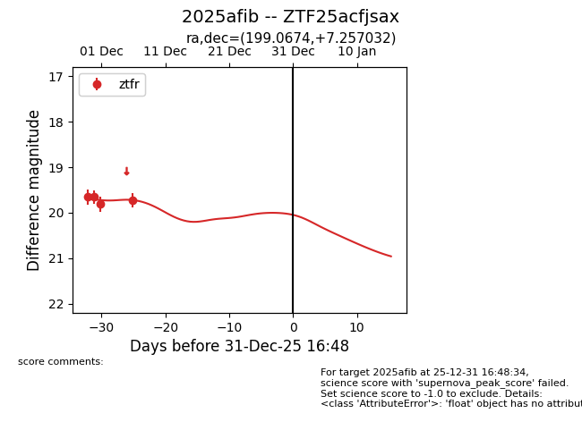
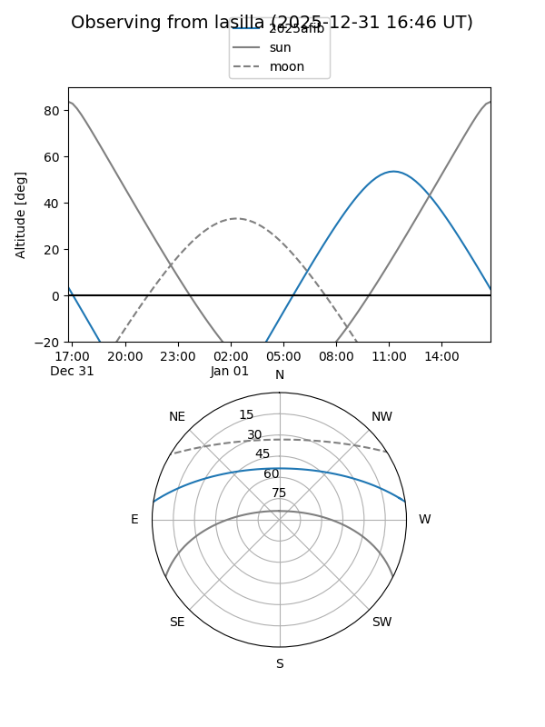
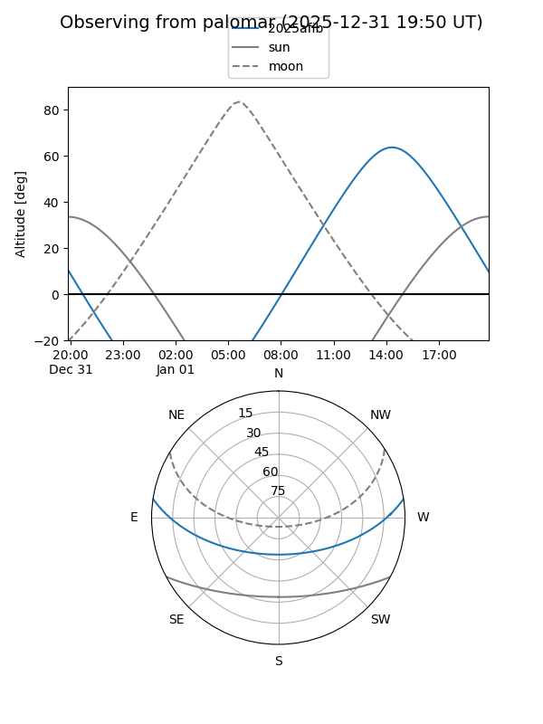
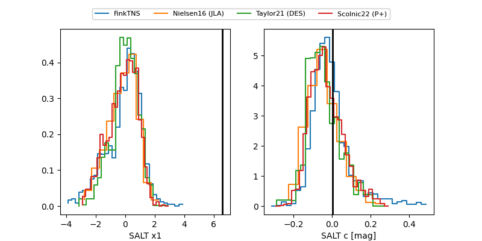

2025afib
Target 2025afib at 2025-12-31 16:59
Aliases and brokers:
FINK:
Lasair:
ALeRCE:
TNS:
YSE:
alt names
ZTF25acfjsax (ztf,fink_ztf)
2025afib (tns,yse)
Coordinates:
equatorial (ra, dec) = 199.0674,+7.25703
equatorial (HMS+DMS) = 13:16:16.19,+07:15:25.31
galactic (l, b) = (320.5764,+69.27373)
Flags:
Photometry:
last ztfr=19.72
4 ztfr detections
Lightcurve

Visibility


Additional plots
